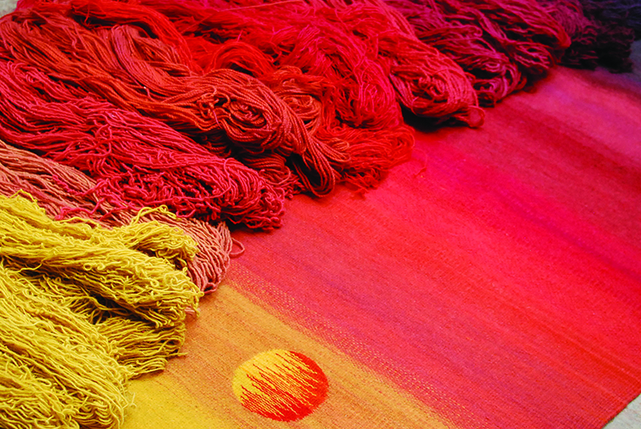

Sustentabilidad
Tinturas Naturales

Por Natalia Martínez Sagán, Dirección de Arte-Maquillaje- Vestuario
¿Qué son los tintes naturales? Son sustancias de origen animal o vegetal utilizadas para dar distintos colores a las fibras. Pueden ser cortezas de árboles, raíces, flores e insectos secos, por solo mencionar algunos. Fueron utilizadas durante miles de años para dar color y vida a los tejidos. Error común: La experiencia en el teñido de telas casi siempre se limita al uso de la tan ponderada -y poco sustentable- anilina, más allá de los intentos caseros de dar color a prendas de algodón con té. Poco y nada se sabe acerca de los tintes naturales o ‘natural dyes’, como proclama el inglés. Natural Dyes: Vasudevan, dueño de ‘Tasara Weaving Centre’ en el sur de la India, vino de visita a nuestro país en el mes de Julio pasado para compartir sus conocimientos sobre distintas técnicas de intervención textil, entre ellas, los tintes naturales.Un poco de historia… Hasta mediados del siglo XVIII -cuando los tintes sintéticos ingresaron al mercado- las tonalidades en la industria textil provenían de los colores que se obtenían de estas diversas fuentes que nos regalaba nuestra Madre Tierra.
Encanto… En medio de ollas de agua hirviendo, bolsas llenas de aserrines varios y hermosas telas, uno se siente como Alicia cuando se cae por el espejo…con un universo hermosamente aromático que se presenta ante uno. ¿Cómo? El procedimiento, en líneas generales, consiste en hervir el elemento con el que se quiere dar el tinte durante un tiempo determinado, dejarlo reposar y, en caso de ser necesario, agregar el mordiente adecuado. Dato: Los mordientes son sustancias que sirven para fijar el color y, dependiendo el caso, modificar la tonalidad que se obtendrá al final del proceso. Entre los más populares se destaca el alumbre o el hierro. Por último, se introduce nuestra prenda –previamente lavada- cómodamente en este baño aromático y se la deja reposar por un periodo de tiempo considerable… el mínimo estipulado es de 1 hora. Importante: Siempre es recomendable trabajar con fibras naturales, tales como la lana y la seda.¿Con qué? Entre los tintes naturales más populares podemos encontrar al té, la yerba, la cáscara de cebolla, el café, la cochinilla y las flores de palo borracho… pero, tal como nos transmitió nuestro querido maestro de la India, la magia de este tipo de teñido reside en experimentar con aquello que podemos encontrar en nuestra propia tierra.
OJO: Un elemento no menor a tener en cuenta es la calidad del agua que utilizaremos –y que suele variar entre regiones-, ya que su acidez o alcalinidad tendrá un impacto considerable en el color que obtendremos al finalizar.
Esencial: Son renovables, sustentables y no tóxicos. Los tintes naturales ofrecen un vasto universo de posibilidades para explorar mientras conectamos con la Tierra y mantenemos con vida milenarias técnicas de trabajo.
Bibliografía: Para ampliar información, recomiendo el maravilloso libro ‘LAS TINTES NATURALES. TELERAS SANTIAGUEÑAS’, de Celestina Stramiglioli.